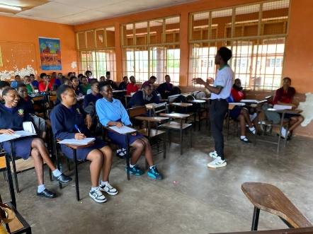
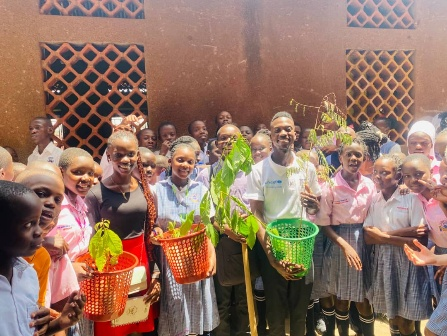
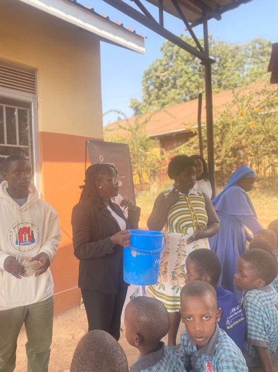
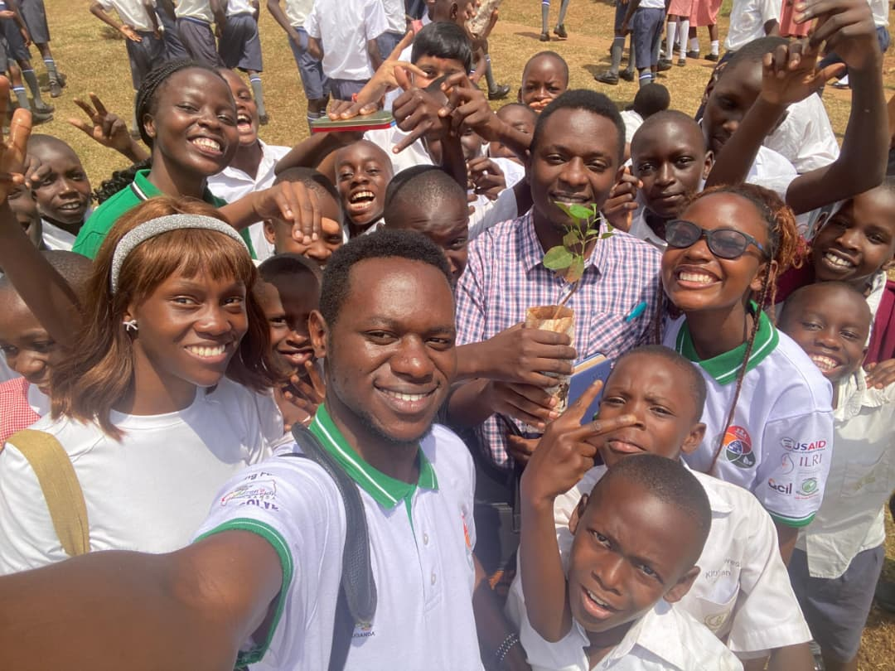
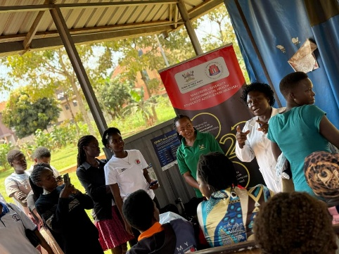

Our Work
Before ECO-BRIDGE KAWEMPE was formally registered, our founding members ran pilot activities in Kampala — the practical experience that led directly to formal CBO registration. This is that record.
These activities took place before our area of operation was confirmed as Kawempe Division. They're included as founding-member pilot work, not as activity under our current Kawempe-focused mandate.
School Environmental Sensitization Outreach
Kitante area schools — interactive classroom sessions, waste segregation demonstrations, and a school-compound tree planting exercise.



Community Waste Segregation Campaign
Door-to-door sensitisation, community barazas with Local Council leaders, and composting demonstrations using kitchen waste.


Tree Planting & Ecosystem Restoration
Seedling distribution to schools and community groups, with follow-up visits to monitor survival.


Air Quality & Pollution Awareness
Sessions on the health risks of poor air quality and the dangers of burning plastics and rubbish.
